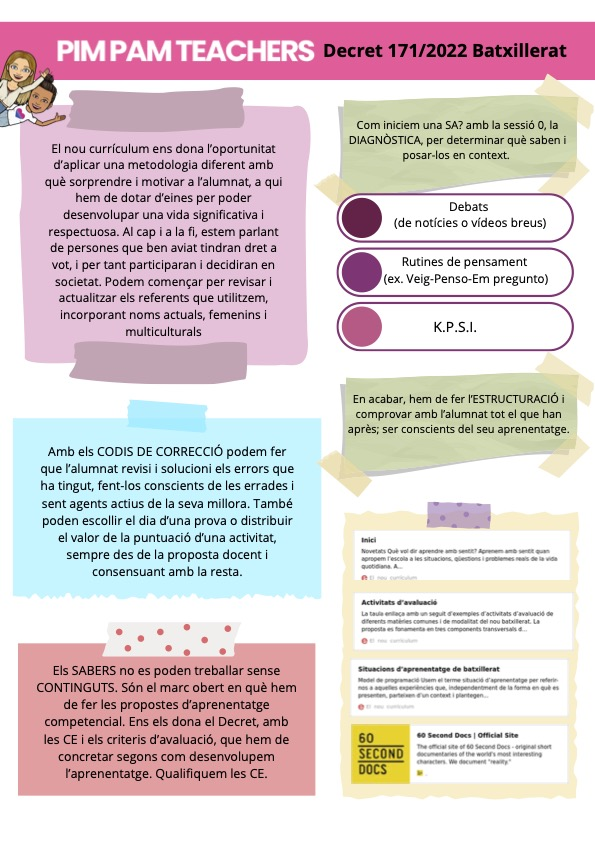

Situaciones de aprendizaje
Diseño, revisión y aterrizaje de propuestas que conectan intención pedagógica, evaluación y viabilidad real.
Esta página se integra ahora con el mismo sistema visual y narrativo del resto del sitio para explicar mejor qué trabajamos, para quién y con qué intención.

Las líneas pueden combinarse y adaptarse según etapa, objetivo y grado de desarrollo del equipo.
Diseño, revisión y aterrizaje de propuestas que conectan intención pedagógica, evaluación y viabilidad real.
Clarificamos criterios, evidencias, instrumentos y feedback para que evaluar tenga sentido formativo.
Herramientas para hacer visible el aprendizaje, enriquecer la reflexión y sostener conversaciones de calidad.
Usos realistas para diseñar materiales, ahorrar tiempo y mejorar procesos sin perder criterio pedagógico.
Arranques de proceso que ayudan a compartir punto de partida, lenguaje y prioridades de trabajo.
Selección de marcos, referentes y decisiones que ayudan a construir una línea pedagógica más consistente.
Si no tenéis claro qué línea encaja mejor, podemos orientaros en una primera conversación breve.